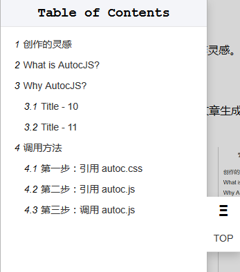

创作的灵感
AnchorJS 是 AutocJS 的创作灵感。既然 AnchorJS 可创建标题的链接，为什么不直接给文章生成一个目录（Table of Contents）导航呢？于是就有了AutocJS.
What is AutocJS?
AutocJS 是一个专门用来给文章生成目录（Table of Contents）导航菜单的工具。AutocJS 会查找文章指定区域中的所有h1~h6的标签，并自动生成文章的目录导航菜单。

Why AutocJS?
AnchorJS 由于是国外的程序员开发的，所以对中文支持不好，无法给中文标题生成锚点。AutocJS 就是一个即支持英文也支持中文的解决方案。
AutocJS 的特点
- 全面支持中文和英文
- 简洁大方的界面，采用绝对应为导航，不会破坏页面的美观
- 弹性的界面布局，可以根据不同的窗口高度，自动调节菜单布局
- 精确的章节统计，文章层次结构一目了然
- 支持 AMD 和 CMD 规范
- 可以作为 jQuery 插件使用
DEMO
演示地址：http://www.yaohaixiao.com/github/autocjs/
API Documentation
AutocJS 目前提供了一个方法 autoc() 和一个 AutocJS (AMD，CMD，Node模块) 对象，简单易用。具体的 API 说明如下：
语法
AutocJS.init(config);参数说明
-
config（必填）
- 数据类型：Object；
- 说明：程序的配置参数对象；
-
config.article（必填）
- 数据类型：String | HTMLElement；
- 说明：要生成文章索引的目标 DOM id 字符串或者 HTML DOM 元素；
-
config.anchors（可选）
- 数据类型：String；
- 说明：希望生成文章导航的标题（h1~h6）选择器；
- 默认值："h1,h2,h3,h4,h5,h6"；
-
config.prefix
- 数据类型：String；
- 说明：config.anchors（h1~h6） 生成锚点的 ID 前缀；
- 默认值："anchor"；
调用方法
AutocJS 的调用很简单，只需要以下3步便可以轻松搞定。
第一步：引用 CSS 样式
<link type="text/css" rel="stylesheet" href="autoc.css">第二步：引用 JS 脚本
// 使用 requirejs (作为 AMD 模块)
<script type="text/javascript" src="../lib/require.js"></script>
// 使用 seajs (作为 CMD 模块)
<script type="text/javascript" src="../lib/sea.js"></script>
// AutocJS 依赖 jQuery（稍后会开发没有任何依赖的版本）
<script type="text/javascript" src="jquery.js"></script>
// 调用 autoc.js
<script type="text/javascript" src="autoc.js"></script>第三步：调用 autoc() 方法
autoc() 方法接受 3 个参数，具体的调用方法如下：
指定文章内容的 DOM 节点
// 最基础的方法，只需要指定文章内容的 DOM 节点的 id
autoc({
article: '#article'
});
AutocJS.init({
article: '#article'
});指定要记录的标题
// 索引只会提取文章 h3 和 h4 的标题
autoc({
article: '#article',
anchors: 'h3,h4'
});
AutocJS.init({
article: '#article',
anchors: 'h3,h4'
});指定标题锚点的 id 的前缀
// h3,h4 的锚点会是 p-1, p-2
autoc({
article: '#article',
anchors: 'h3,h4',
prefix: 'p'
});
AutocJS.init({
article: '#article',
anchors: 'h3,h4',
prefix: 'p'
});作为 jQuery 插件调用
$('#article').autoc();
作为 AMD 模块调用
require(['jquery','autocjs'], function($,autocjs){
// jquery 插件
$('#article').autoc();
// 独立的模块
autocjs.init();
});作为 CMD 模块调用
seajs.use(['jquery','autocjs'], function($,autocjs){
// jquery 插件
$('#article').autoc();
// 独立的模块
autocjs.init();
});License
Available via the MIT license.